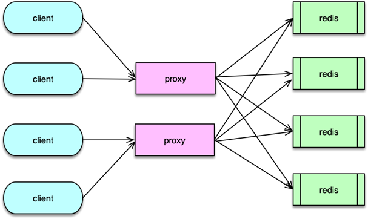
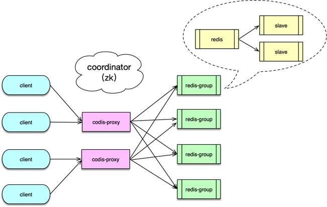
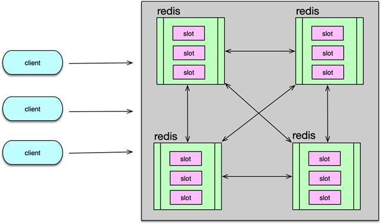
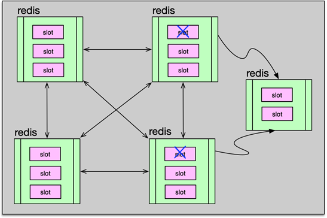
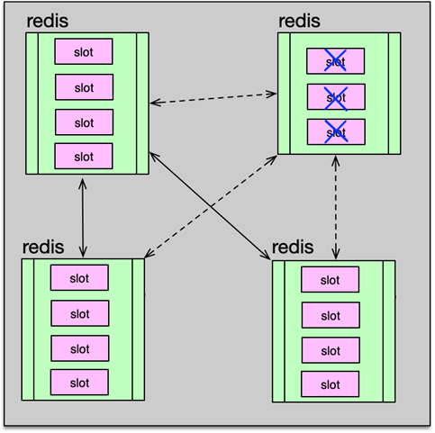
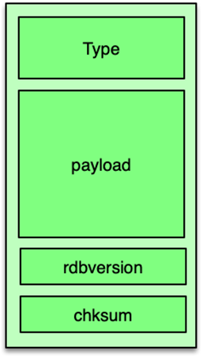

- 00 开篇寄语：缓存，你真的用对了吗？.md.html
- 01 业务数据访问性能太低怎么办？.md.html
- 02 如何根据业务来选择缓存模式和组件？.md.html
- 03 设计缓存架构时需要考量哪些因素？.md.html
- 04 缓存失效、穿透和雪崩问题怎么处理？.md.html
- 05 缓存数据不一致和并发竞争怎么处理？.md.html
- 06 Hot Key和Big Key引发的问题怎么应对？.md.html
- 07 MC为何是应用最广泛的缓存组件？.md.html
- 08 MC系统架构是如何布局的？.md.html
- 09 MC是如何使用多线程和状态机来处理请求命令的？.md.html
- 10 MC是怎么定位key的.md.html
- 11 MC如何淘汰冷key和失效key.md.html
- 12 为何MC能长期维持高性能读写？.md.html
- 13 如何完整学习MC协议及优化client访问？.md.html
- 14 大数据时代，MC如何应对新的常见问题？.md.html
- 15 如何深入理解、应用及扩展 Twemproxy？.md.html
- 16 常用的缓存组件Redis是如何运行的？.md.html
- 17 如何理解、选择并使用Redis的核心数据类型？.md.html
- 18 Redis协议的请求和响应有哪些“套路”可循？.md.html
- 19 Redis系统架构中各个处理模块是干什么的？.md.html
- 20 Redis如何处理文件事件和时间事件？.md.html
- 21 Redis读取请求数据后，如何进行协议解析和处理.md.html
- 22 怎么认识和应用Redis内部数据结构？.md.html
- 23 Redis是如何淘汰key的？.md.html
- 24 Redis崩溃后，如何进行数据恢复的？.md.html
- 25 Redis是如何处理容易超时的系统调用的？.md.html
- 26 如何大幅成倍提升Redis处理性能？.md.html
- 27 Redis是如何进行主从复制的？.md.html
- 28 如何构建一个高性能、易扩展的Redis集群？.md.html
- 29 从容应对亿级QPS访问，Redis还缺少什么？.md.html
- 30 面对海量数据，为什么无法设计出完美的分布式缓存体系？.md.html
- 31 如何设计足够可靠的分布式缓存体系，以满足大中型移动互联网系统的需要？.md.html
- 32 一个典型的分布式缓存系统是什么样的？.md.html
- 33 如何为秒杀系统设计缓存体系？.md.html
- 34 如何为海量计数场景设计缓存体系？.md.html
- 35 如何为社交feed场景设计缓存体系？.md.html
28 如何构建一个高性能、易扩展的Redis集群？
通过上一课时的学习，我们知道复制功能可以 N 倍提升 Redis 节点的读性能，而集群则可以通过分布式方案来 N 倍提升 Redis 的写性能。除了提升性能之外，Redis 集群还可以提供更大的容量，提升资源系统的可用性。
Redis 集群的分布式方案主要有 3 种。分别是 Client 端分区方案，Proxy 分区方案，以及原生的 Redis Cluster 分区方案。
Client 端分区

Client 端分区方案就是由 Client 决定数据被存储到哪个 Redis 分片，或者由哪个 Redis 分片来获取数据。它的核心思想是通过哈希算法将不同的 key 映射到固定的 Redis 分片节点上。对于单个 key 请求，Client 直接对 key 进行哈希后，确定 Redis 分片，然后进行请求。而对于一个请求附带多个 key 的场景，Client 会首先将这些 key 按哈希分片进行分类，从而将一个请求分拆为多个请求，然后再分别请求不同的哈希分片节点。
Client 通过哈希算法将数据进行分布，一般采用的哈希算法是取模哈希、一致性哈希和区间分布哈希。前两种哈希算法之前的课程已有详细分析，此处不在赘述。对于区间分布哈希，实际是一种取模哈希的变种，取模哈希是哈希并取模计算后，按哈希值来分配存储节点，而区间哈希是在哈希计算后，将哈希划分为多个区间，然后将这些区间分配给存储节点。如哈希后分 1024 个哈希点，然后将 0~511 作为分片 1，将 512~1023 作为分片 2。
对于 Client 端分区，由于 Redis 集群有多个 master 分片，同时每个 master 下挂载多个 slave，每个 Redis 节点都有独立的 IP 和端口。如果 master 异常需要切换 master，或读压力过大需要扩展新的 slave，这些都会涉及集群存储节点的变更，需要 Client 端做连接切换。

为了避免 Client 频繁变更 IP 列表，可以采用 DNS 的方式来管理集群的主从。对 Redis 集群的每个分片的主和从均采用不同 DNS 域名。Client 通过域名解析的方式获取域名下的所有 IP，然后来访问集群节点。由于每个分片 master 下有多个 slave，Client 需要在多个 slave 之间做负载均衡。可以按照权重建立与 slave 之间的连接，然后访问时，轮询使用这些连接依次访问，即可实现按权重访问 slave 节点。
在 DNS 访问模式下，Client 需要异步定时探测主从域名，如果发现 IP 变更，及时与新节点建立连接，并关闭老连接。这样在主库故障需要切换时，或者从库需要增加减少时，任何分片的主从变化，只需运维或管理进程改一下 DNS 下的 IP 列表，业务 Client 端不需要做任何配置变更，即可正常切换访问。
Client 端分区方案的优点在于分区逻辑简单，配置简单，Client 节点之间和 Redis 节点之间均无需协调，灵活性强。而且 Client 直接访问对应 Redis 节点，没有额外环节，性能高效。但该方案扩展不便。在 Redis 端，只能成倍扩展，或者预先分配足够多的分片。在 Client 端，每次分片后，业务端需要修改分发逻辑，并进行重启。
Proxy 端分区
Proxy 端分区方案是指 Client 发送请求给 Proxy 请求代理组件，Proxy 解析 Client 请求，并将请求分发到正确的 Redis 节点，然后等待 Redis 响应，最后再将结果返回给 Client 端。

如果一个请求包含多个 key，Proxy 需要将请求的多个 key，按分片逻辑分拆为多个请求，然后分别请求不同的 Redis 分片，接下来等待Redis响应，在所有的分拆响应到达后，再进行聚合组装，最后返回给 Client。在整个处理过程中，Proxy 代理首先要负责接受请求并解析，然后还要对 key 进行哈希计算及请求路由，最后还要将结果进行读取、解析及组装。如果系统运行中，主从变更或发生扩缩容，也只需由 Proxy 变更完成，业务 Client 端基本不受影响。
常见的 Proxy 端分区方案有 2 种，第一种是基于 Twemproxy 的简单分区方案，第二种是基于Codis 的可平滑数据迁移的分区方案。
Twemproxy 是 Twitter 开源的一个组件，支持 Redis 和 Memcached 协议访问的代理组件。在讲分布式 Memecached 实战时，我曾经详细介绍了它的原理和实现架构，此处不再赘述。总体而言，Twemproxy 实现简单、稳定性高，在一些访问量不大且很少发生扩缩的业务场景中，可以很好的满足需要。但由于 Twemproxy 是单进程单线程模型的，对包含多个 key 的 mutli 请求，由于需要分拆请求，然后再等待聚合，处理性能较低。而且，在后端 Redis 资源扩缩容，即增加或减少分片时，需要修改配置并重启，无法做到平滑扩缩。而且 Twemproxy 方案默认只有一个代理组件，无管理后端，各种运维变更不够便利。

而 Codis 是一个较为成熟的分布式 Redis 解决方案。对于业务 Client 访问，连接 Codis-proxy 和连接单个 Redis 几乎没有区别。Codis 底层除了会自动解析分发请求之外，还可以在线进行数据迁移，使用非常方便。
Codis 系统主要由 Codis-server、Codis-proxy、Codis-dashboard、Zookeeper 等组成。
- Codis-server 是 Codis 的存储组件，它是基于 Redis 的扩展，增加了 slot 支持和数据迁移功能，所有数据存储在预分配的 1024 个 slot 中，可以按 slot 进行同步或异步数据迁移。
- Codis-proxy 处理 Client 请求，解析业务请求，并路由给后端的 Codis-server group。Codis 的每个 server group 相当于一个 Redis 分片，由 1 个 master 和 N 个从库组成。
- Zookeeper 用于存储元数据，如 Proxy 的节点，以及数据访问的路由表。除了 Zookeeper，Codis 也支持 etcd 等其他组件，用于元数据的存储和通知。
- Codis-dashboard 是 Codis 的管理后台，可用于管理数据节点、Proxy 节点的加入或删除，还可用于执行数据迁移等操作。Dashboard 的各项变更指令通过 Zookeeper 进行分发。
- Codis 提供了功能较为丰富的管理后台，可以方便的对整个集群进行监控及运维。
Proxy 端分区方案的优势，是 Client 访问逻辑和 Redis 分布逻辑解耦，业务访问便捷简单。在资源发生变更或扩缩容时，只用修改数量有限的 Proxy 即可，数量庞大的业务 Client 端不用做调整。
但 Proxy 端分区的方案，访问时请求需要经过 Proxy 中转，访问多跳了一级，性能会存在损耗，一般损耗会达到 5~15% 左右。另外多了一个代理层，整个系统架构也会更复杂。
Redis Cluster 分区
Redis 社区版在 3.0 后开始引入 Cluster 策略，一般称之为 Redis-Cluster 方案。Redis-Cluster 按 slot 进行数据的读写和管理，一个 Redis-Cluster 集群包含 16384 个 slot。每个 Redis 分片负责其中一部分 slot。在集群启动时，按需将所有 slot 分配到不同节点，在集群系统运行后，按 slot 分配策略，将 key 进行 hash 计算，并路由到对应节点 访问。

随着业务访问模型的变化，Redis 部分节点可能会出现压力过大、访问不均衡的现象，此时可以将 slot 在 Redis 分片节点内部进行迁移，以均衡访问。如果业务不断发展，数据量过大、TPS过高，还可以将 Redis 节点的部分 slot 迁移到新节点，增加 Redis-Cluster 的分片，对整个 Redis 资源进行扩容，已提升整个集群的容量及读写能力。
在启动 Redis 集群时，在接入数据读写前，可以通过 Redis 的 Cluster addslots 将 16384 个 slot 分配给不同的 Redis 分片节点，同时可以用 Cluster delslots 去掉某个节点的 slot，用 Cluster flushslots 清空某个节点的所有 slot 信息，来完成 slot 的调整。
Redis Cluster 是一个去中心化架构，每个节点记录全部 slot 的拓扑分布。这样 Client 如果把 key 分发给了错误的 Redis 节点，Redis 会检查请求 key 所属的 slot，如果发现 key 属于其他节点的 slot，会通知 Client 重定向到正确的 Redis 节点访问。
Redis Cluster 下的不同 Redis 分片节点通过 gossip 协议进行互联，使用 gossip 的优势在于，该方案无中心控制节点，这样，更新不会受到中心节点的影响，可以通过通知任意一个节点来进行管理通知。不足就是元数据的更新会有延时，集群操作会在一定的时延后才会通知到所有Redis。由于 Redis Cluster 采用 gossip 协议进行服务节点通信，所以在进行扩缩容时，可以向集群内任何一个节点，发送 Cluster meet 指令，将新节点加入集群，然后集群节点会立即扩散新节点，到整个集群。meet 新节点操作的扩散，只需要有一条节点链能到达集群各个节点即可，无需 meet 所有集群节点，操作起来比较便利。
在 Redis-Cluster 集群中，key 的访问需要 smart client 配合。Client 首先发送请求给 Redis 节点，Redis 在接受并解析命令后，会对 key 进行 hash 计算以确定 slot 槽位。计算公式是对 key 做 crc16 哈希，然后对 16383 进行按位与操作。如果 Redis 发现 key 对应的 slot 在本地，则直接执行后返回结果。

如果 Redis 发现 key 对应的 slot 不在本地，会返回 moved 异常响应，并附带 key 的 slot，以及该 slot 对应的正确 Redis 节点的 host 和 port。Client 根据响应解析出正确的节点 IP 和端口，然后把请求重定向到正确的 Redis，即可完成请求。为了加速访问，Client 需要缓存 slot 与 Redis 节点的对应关系，这样可以直接访问正确的节点，以加速访问性能。
Redis-Cluster 提供了灵活的节点扩缩容方案，可以在不影响用户访问的情况下，动态为集群增加节点扩容，或下线节点为集群缩容。由于扩容在线上最为常见，我首先来分析一下 Redis-Cluster 如何进行扩容操作。
在准备对 Redis 扩容时，首先准备待添加的新节点，部署 Redis，配置 cluster-enable 为 true，并启动。然后运维人员，通过client连接上一个集群内的 Redis 节点，通过 cluster meet 命令将新节点加入到集群，该节点随后会通知集群内的其他节点，有新节点加入。因为新加入的节点还没有设置任何 slot，所以不接受任何读写操作。
然后，将通过 cluster setslot $slot importing 指令，在新节点中，将目标 slot 设为 importing 导入状态。再将 slot 对应的源节点，通过 cluster setslot $slot migrating 将源节点的 slot 设为 migrating 迁移导出状态。
接下来，就从源节点获取待迁移 slot 的 key，通过 cluster getkeysinslot $slot $count 命令，从 slot 中获取 N 个待迁移的 key。然后通过 migrate 指令，将这些 key 依次逐个迁移或批量一次迁移到目标新节点。对于迁移单个 key，使用指令 migrate $host $port $key $dbid timeout，如果一次迁移多个 key，在指令结尾加上 keys 选项，同时将多个 key 放在指令结尾即可。持续循环前面 2 个步骤，不断获取 slot 里的 key，然后进行迁移，最终将 slot 下的所有数据都迁移到目标新节点。最后通过 cluster setslot 指令将这个 slot 指派给新增节点。setslot 指令可以发给集群内的任意一个节点，这个节点会将这个指派信息扩散到整个集群。至此，slot 就迁移到了新节点。如果要迁移多个 slot，可以继续前面的迁移步骤，最终将所有需要迁移的 slot 数据搬到新节点。
这个新迁移 slot 的节点属于主库，对于线上应用，还需要增加从库，以增加读写能力及可用性，否则一旦主库崩溃，整个分片的数据就无法访问。在节点上增加从库，需要注意的是，不能使用非集群模式下的 slaveof 指令，而要使用 cluster replication，才能完成集群分片节点下的 slave 添加。另外，对于集群模式，slave 只能挂在分片 master 上，slave 节点自身不能再挂载 slave。

缩容流程与扩容流程类似，只是把部分节点的 slot 全部迁移走，然后把这些没有 slot 的节点进行下线处理。在下线老节点之前，需要注意，要用 cluster forget 通知集群，集群节点要，从节点信息列表中，将目标节点移除，同时会将该节点加入到禁止列表，1 分钟之内不允许再加入集群。以防止在扩散下线节点时，又被误加入集群。
Redis 社区官方在源代码中也提供了 redis-trib.rb，作为 Redis Cluster 的管理工具。该工具用 Ruby 开发，所以在使用前，需要安装相关的依赖环境。redis-trib 工具通过封装前面所述的 Redis 指令，从而支持创建集群、检查集群、添加删除节点、在线迁移 slot 等各种功能。
Redis Cluster 在 slot 迁移过程中，获取key指令以及迁移指令逐一发送并执行，不影响 Client 的正常访问。但在迁移单条或多条 key 时，Redis 节点是在阻塞状态下进行的，也就是说，Redis 在迁移 key 时，一旦开始执行迁移指令，就会阻塞，直到迁移成功或确认失败后，才会停止该 key 的迁移，从而继续处理其他请求。slot 内的 key 迁移是通过 migrate 指令进行的。
在源节点接收到 migrate $host $port $key $destination-db 的指令后，首先 slot 迁移的源节点会与迁移的目标节点建立 socket 连接，第一次迁移，或者迁移过程中，当前待迁移的 DB 与前一次迁移的 DB 不同，在迁移数据前，还需要发送 select $dbid 进行切换到正确的 DB。

然后，源节点会轮询所有待迁移的 key/value。获取 key 的过期时间，并将 value 进行序列化，序列化过程就是将 value 进行 dump，转换为类 rdb 存储的二进制格式。这个二进制格式分 3 部分。第一部分是 value 对象的 type。第二部分是 value 实际的二进制数据；第三部分是当前 rdb 格式的版本，以及该 value 的 CRC64 校验码。至此，待迁移发送的数据准备完毕，源节点向目标节点，发送 restore-asking 指令，将过期时间、key、value 的二进制数据发送给目标节点。然后同步等待目标节点的响应结果。
目标节点对应的client，收到指令后，如果有 select 指令，就首先切换到正确的 DB。接下来读取并处理 resotre-asking 指令，处理 restore-asking 指令时，首先对收到的数据进行解析校验，获取 key 的 ttl，校验 rdb 版本及 value 数据 cc64 校验码，确认无误后，将数据存入 redisDb，设置过期时间，并返回响应。
源节点收到目标节点处理成功的响应后。对于非 copy 类型的 migrate，会删除已迁移的 key。至此，key 的迁移就完成了。migrate 迁移指令，可以一次迁移一个或多个 key。注意，整个迁移过程中，源节点在发送 restore-asking 指令后，同步阻塞，等待目标节点完成数据处理，直到超时或者目标节点返回响应结果，收到结果后在本地处理完毕后序事件，才会停止阻塞，才能继续处理其他事件。所以，单次迁移的 key 不能太多，否则阻塞时间会较长，导致 Redis 卡顿。同时，即便单次只迁移一个 key，如果对应的 value 太大，也可能导致 Redis 短暂卡顿。
在 slot 迁移过程中，不仅其他非迁移 slot 的 key 可以正常访问，即便正在迁移的 slot，它里面的 key 也可以正常读写，不影响业务访问。但由于 key 的迁移是阻塞模式，即在迁移 key 的过程中，源节点并不会处理任何请求，所以在 slot 迁移过程中，待读写的 key 只有三种存在状态。
- 尚未被迁移，后续会被迁走；
- 已经被迁移；
- 这个 key 之前并不存在集群中，是一个新 key。
slot 迁移过程中，对节点里的 key 处理方式如下。
-
对于尚未被迁移的 key，即从 DB 中能找到该 key，不管这个 key 所属的 slot 是否正在被迁移，都直接在本地进行读写处理。
-
对于无法从 DB 中找到 value 的 key，但key所属slot正在被迁移，包括已迁走或者本来不存在的 key 两种状态，Redis 返回 ask 错误响应，并附带 slot 迁移目标节点的 host 和 port。Client 收到 ask 响应后，将请求重定向到 slot 迁移的新节点，完成响应处理。
-
对于无法从 DB 中找到 value 的 key，且 key 所在的 slot 不属于本节点，说明 Client 发送节点有误，直接返回 moved 错误响应，也附带上 key 对应节点的 host 和 port，由 Client 重定向请求。
-
对于 Redis Cluster 集群方案，由社区官方实现，并有 Redis-trib 集群工具，上线和使用起来比较便捷。同时它支持在线扩缩，可以随时通过工具查看集群的状态。但这种方案也存在不少弊端。首先，数据存储和集群逻辑耦合，代码逻辑复杂，容易出错。
其次，Redis 节点要存储 slot 和 key 的映射关系，需要额外占用较多内存，特别是对 value size 比较小、而key相对较大的业务，影响更是明显。
再次，key 迁移过程是阻塞模式，迁移大 value 会导致服务卡顿。而且，迁移过程，先获取 key，再迁移，效率低。最后，Cluster 模式下，集群复制的 slave 只能挂载到 master，不支持 slave 嵌套，会导致 master 的压力过大，无法支持那些，需要特别多 slave、读 TPS 特别大的业务场景。